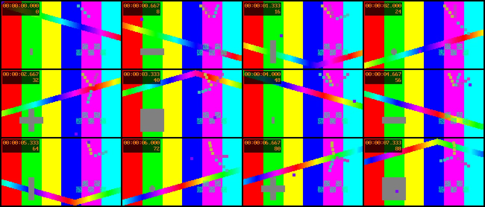

一条订单接口，三份响应
公开合成案例| 字段 | 旧响应 | 回归响应 | 修正后 |
|---|---|---|---|
paid_amount | 19900 | 18900 | 19900 |
quantity | 2 | 3 | 2 |
can_refund | true | 1 | true |
note | null | 字段缺失 | null |
你今天要交付什么？
选择任务，复制安装与任务说明，再对照样本核对。
从明细到结论，保留每一行来源
两项技能均 v0.1.1列顺序不一样，仍按表头合并。金额缺失就留待取数；只标出异常现象，原因交给你确认。
- 输入
- 两份 XLSX
各 36 行，列顺序不同 - 交付
- 合并表 + 一页报告
明细、汇总、来源与规则 - 验收
- 72 行逐条可追溯
四路已知金额一致
- 原件、合并、来源核对均为 72 行；两份原件的 SHA256 前后相同。
- 8 月退款率按 12 ÷ 400 = 3.00% 计算，避免平均各渠道比例。
- 9 月仅标出华东 / 线上约 −60% 的变化；华西 / 线上缺失保留未知。
安装 Excel 处理与报表制作
skillhub install excel-processing --namespace indiv-captain --dir "$HOME/.workbuddy/skills"
skillhub install report-making --namespace indiv-captain --dir "$HOME/.workbuddy/skills"适用于已有 SkillHub CLI 的 macOS / Linux 环境。安装后重启 WorkBuddy，核对作者与版本；已有同名目录先检查，不强制覆盖。需要 Python 3.8+ 和已有 openpyxl。
复制给 WorkBuddy
在我打开的 workbuddy-skills 仓库中，运行 examples/office-report/run_demo.py，给 --out-dir 一个全新的本地目录；不要安装依赖或覆盖现有目录。成功后打开 report.md，用 verification.json 核对 72 行来源、原件哈希与四路金额。明确说明这是合成演示，缺失指标保持“待取数”，异常原因写“待查”。若缺少仓库或依赖，请先说明缺什么，不宣称任务完成。
完整办公演示位于 GitHub 源码仓库；安装两个技能后，还需在 WorkBuddy 打开本仓库。两个技能包不单独包含这份完整演示。
展开实际案例结果与核对表
| 核对项 | 公开合成案例结果 | 如何验收 |
|---|---|---|
| 已知销售额 | 312,050.89 元 | 原件 / 明细 / 分组 / 月份四路合计一致 |
| 8 月总退款率 | 3.00% | 12 个退款订单 ÷ 400 个订单 |
| 9 月华东 / 线上 | 约 −60%；原因待查 | 销售额 2,000.02 → 800.02 元 |
| 9 月全量销售额 | 待取数 | 已知部分 32,050.09 元不能代替全量 |
| 来源行 | 72 / 72 / 72 | 原件行、合并行、逐行匹配 |
摘自 2026-10-10 维护者本地验收记录；数据与异常均为演示生成，不是客户经营成果。打开结构化原记录
让行为变化落到具体字段
api-diff-test v0.1.1同一请求发到两个环境，比较状态码、JSON 类型与业务值。先跑技能自带的两个本地服务，不用准备真实接口或凭证。
- 输入
- 同一订单 GET
旧、新两个本地服务 - 交付
- 失败与复验报告
JSON + Markdown + 校验 - 验收
- 4 处差异被发现
修正后 same，退出码 0
- 实付金额、商品数量、布尔类型、字段缺失四处变化都能定位。
- 报告列出实际忽略的 id、request_id、updated_at 路径；id 不吞掉 order_id。
- 工具规则：双方同为 HTTP 500 仍不通过；本次客户端案例两端均为 200，未覆盖非 2xx。差分只验证这组输入，不代表整个迁移验收通过。
安装接口差分测试
skillhub install api-diff-test --namespace indiv-captain --dir "$HOME/.workbuddy/skills"已有 SkillHub CLI 和 Python 3 即可复跑本地案例。安装后重启 WorkBuddy，核对作者与 v0.1.1；外部地址或写请求需要先确认执行范围。
复制给 WorkBuddy
调用 indiv-captain 的接口差分测试 v0.1.1。先复跑技能目录下 examples/local_order_demo.py，只使用它的两个本地服务，保留 regressed.json、repaired.json 和 verification.json。核对四处差异、修正后 same 与退出码、实际忽略路径以及输入 SHA256。明确说明它是合成示例，不代表整个系统迁移通过。之后再说明如何替换成我提供且已授权的测试用例；接入外部地址或执行写请求前先确认。
平台安装目录名为 api-diff-test，源码目录名为 skills/api-diff。常见金额 / 数量字段名保护不能识别所有业务含义，忽略规则仍需按响应契约复核。
展开合成输入与真实差异路径
{
"old": {
"id": "response-old",
"order_id": "DEMO-ORDER-001",
"paid_amount": 19900,
"items": [{"sku": "DEMO-SKU-A", "quantity": 2}],
"can_refund": true,
"note": null,
"request_id": "synthetic-request-old",
"updated_at": "2026-10-10T00:00:00Z"
},
"regressed": {
"id": "response-new",
"order_id": "DEMO-ORDER-001",
"paid_amount": 18900,
"items": [{"sku": "DEMO-SKU-A", "quantity": 3}],
"can_refund": 1,
"request_id": "synthetic-request-new",
"updated_at": "2026-10-10T00:00:01Z"
},
"repaired": {
"id": "response-fixed",
"order_id": "DEMO-ORDER-001",
"paid_amount": 19900,
"items": [{"sku": "DEMO-SKU-A", "quantity": 2}],
"can_refund": true,
"note": null,
"request_id": "synthetic-request-fixed",
"updated_at": "2026-10-10T00:00:02Z"
}
}实际失败报告中的四个路径
$.can_refund
$.items[0].quantity
$.note
$.paid_amount输入直接摘自公开 order-responses.json；差异路径摘自 2026-10-10 本地 HTTP 验收记录。金额单位为分。查看完整输入原件
用画面与时间点准备复盘素材
video-frame-extract v0.1.2把你有权使用的本机录屏抽成 12 张画面与一张联系表。结果用于核对可见内容；没有画面依据的内容不能补成会议结论。
- 输入
- 本机视频
示例为 8 秒测试图案 - 交付
- 12 张图 + 联系表
index.csv 时间点 - 验收
- 画面与时间点对应
原视频 SHA256 不变
- 示例产出 12 张 768 × 432 JPG；联系表按 4 × 3 排列，首格从第 0 秒起。
- 每张都有采样时刻；图片本身不带时间文字，需一起保留 index.csv。
- 同目录重跑会保护已有图片与索引；新一轮用新目录，缺少工具就明确停止。
安装视频抽帧
skillhub install video-frame-extract --namespace indiv-captain --dir "$HOME/.workbuddy/skills"需要已有 Python 3.8+、ffmpeg 和 ffprobe。安装技能不会代装这些工具。安装后重启 WorkBuddy，核对作者与 v0.1.2。
复制给 WorkBuddy
调用 indiv-captain 的视频抽帧 v0.1.2，先按技能 examples/meeting-review-local-demo.md 复跑 8 秒合成视频案例，使用新的输出目录。抽 12 张均匀画面、保留 index.csv，并生成 4×3 联系表。核对图片张数、采样时刻、联系表排列与原视频 SHA256 未改变。明确这是测试图案，不生成真实会议纪要，不上传或发送。若缺少 ffmpeg、ffprobe 或 Python，先说明依赖缺口。
替换成自己的本机录屏时，先说明使用权限及需遮盖的画面。抽帧会漏掉采样之间的内容，不能替代音频转写或人工核对。
展开实际联系表与时间点样本

index.csv 的时间点摘录
| 文件 | 采样时刻（秒） | 时间码 |
|---|---|---|
| f_0000.jpg | 0.000 | 00:00:00.000 |
| f_0001.jpg | 0.667 | 00:00:00.667 |
| f_0002.jpg | 1.333 | 00:00:01.333 |
| f_0003.jpg | 2.000 | 00:00:02.000 |
| f_0004.jpg | 2.667 | 00:00:02.667 |
| f_0005.jpg | 3.333 | 00:00:03.333 |
| f_0006.jpg | 4.000 | 00:00:04.000 |
| f_0007.jpg | 4.667 | 00:00:04.667 |
| f_0008.jpg | 5.333 | 00:00:05.333 |
| f_0009.jpg | 6.000 | 00:00:06.000 |
| f_0010.jpg | 6.667 | 00:00:06.667 |
| f_0011.jpg | 7.333 | 00:00:07.333 |
实际选中的源视频帧可能早不到一帧，本例最多约 0.083 秒。只说明采样结果，不推断没有截图的发言。查看原命令与核对方式
每个结论，都留一条核对路径
这里展示的是公开源码、实际输出与维护者验收记录。你可以复跑同样的输入，查看哪里通过、哪里仍有边界。
2026-10-12，维护者侧代理已在真实 WorkBuddy 客户端显式读取接口技能并完成合成验收，产物经独立程序核对。市场自动触发与独立用户成果仍未确认；不代表腾讯官方认证。查看客户端实测与报告复核。
用完后，留下一件具体的事
写下技能版本、最小公开输入、结果或失败步骤。完成任务、遇到问题、确实再次使用，都值得记录。